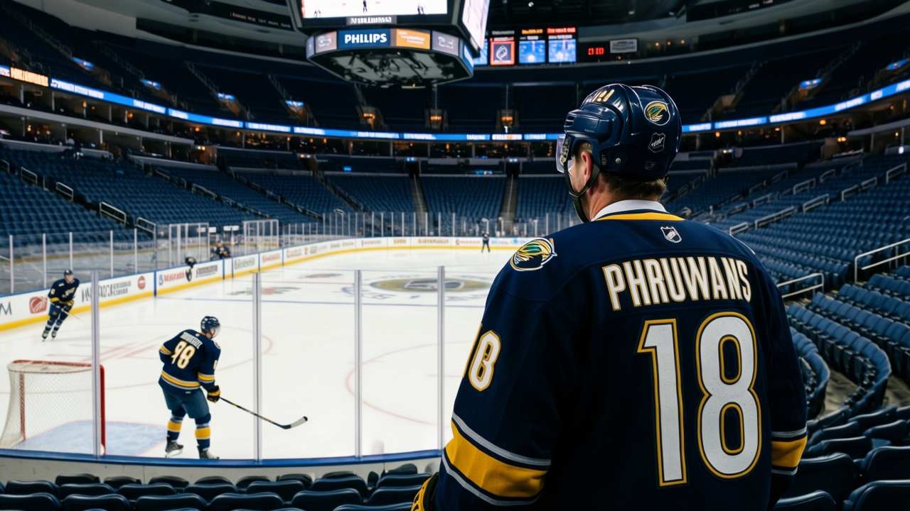

92 GRADE, 8 WINS, 13,580 EMPTY SEATS: ATLANTA IS WASTING THE BEST 21-YEAR-OLD IN HOCKEY
Ilya Kovalchuk and Dany Heatley both grade above 90. Their team has 24 points and the 16th-best building in a 30-team league.
 Mickey "The Mick" DonnellyColumnist, ex-goalie · The Penalty Box
Mickey "The Mick" DonnellyColumnist, ex-goalie · The Penalty Box
Four players in the Bureau's Book grade 90 or above this week. Two of them play for  Atlanta Thrashers, a club that has won eight hockey games. Everything else in the Southeast Division is a footnote.
Atlanta Thrashers, a club that has won eight hockey games. Everything else in the Southeast Division is a footnote.
 Ilya Kovalchuk86 is 21 years old. The Book has him at 92, the third-highest overall in this league behind
Ilya Kovalchuk86 is 21 years old. The Book has him at 92, the third-highest overall in this league behind  Marian Gaborik96 at 97 and
Marian Gaborik96 at 97 and  Todd Bertuzzi95 at 93. His form is +6 on the Development Index, which means he is still climbing. He has 57 points in 32 games, a 146 pace, 24 goals. He is not a prospect. He is not a project. He is the second-best winger on the planet and he is playing on a roster worth $36.79 million, the third-cheapest in this league.
Todd Bertuzzi95 at 93. His form is +6 on the Development Index, which means he is still climbing. He has 57 points in 32 games, a 146 pace, 24 goals. He is not a prospect. He is not a project. He is the second-best winger on the planet and he is playing on a roster worth $36.79 million, the third-cheapest in this league.
 Dany Heatley84, 23, grades 90. He has 53 points in 29 games, a 150 pace, 29 goals in 29 games. He was the second overall pick in 2000 and he is producing like one.
Dany Heatley84, 23, grades 90. He has 53 points in 29 games, a 150 pace, 29 goals in 29 games. He was the second overall pick in 2000 and he is producing like one.
Those are two of the four 90-graded players in the entire Book. The other two play for teams with 56 points and 42 points. Kovalchuk and Heatley play for a team with 24.
You do the math. ATL has $1.53M per point. Not the worst in the league, not close. But they spend the least in the division, carry two of the four best players in hockey, and sit third from the bottom in the standings. Eight wins. Nineteen losses. Two overtimes lost. 118 goals for, 139 against.
Here is the part that makes me lose sleep.  Phoenix Coyotes has 12,092 people in the building and I expect that. Atlanta Thrashers charges $78 and 13,580 show up. You have a 21-year-old with a 92 grade, a 23-year-old with a 90 grade, and you cannot fill the place. The fans in that city know something the rest of us keep pretending we don't: this is not a problem those two can fix.
Phoenix Coyotes has 12,092 people in the building and I expect that. Atlanta Thrashers charges $78 and 13,580 show up. You have a 21-year-old with a 92 grade, a 23-year-old with a 90 grade, and you cannot fill the place. The fans in that city know something the rest of us keep pretending we don't: this is not a problem those two can fix.

The Development Index has Kovalchuk rising. The 92 is real and the ceiling is higher. Every week he wears that sweater in an 8-win building is another week wasted. The room averages 89.3, eighth-worst morale in the league. Nobody in the lowest-15 list plays for ATL, so at least nobody is miserable enough to say so publicly. The quiet kind of bad. The kind where a 92-grade player watches 19 losses and starts to figure out that 57 points in 32 games is not a problem being solved, it is a stat line padded in a landfill.
I have written about overpaid players. I have written about buried players. This is different. This is two players the Bureau rates in the top four in hockey, on a team the Bureau rates near the floor. The Development Index can go up all winter. It doesn't change the standings.